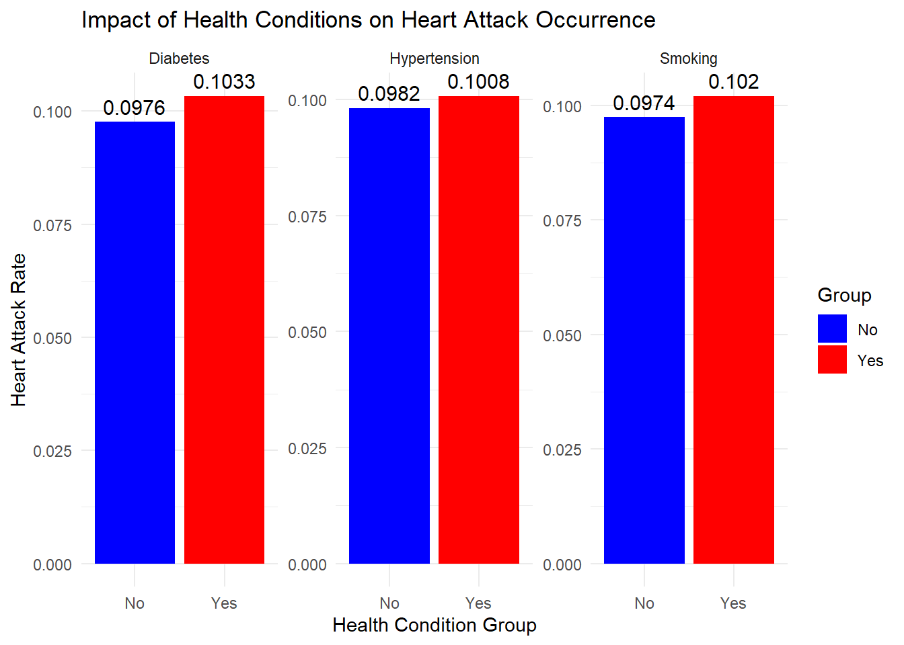
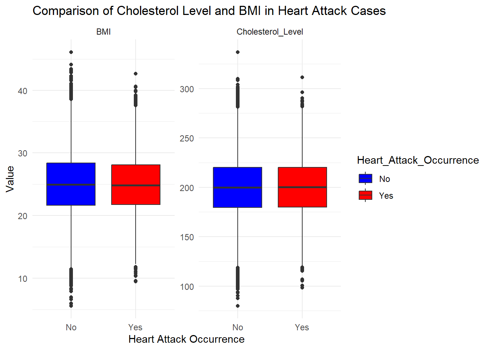

pacman::p_load(tidyverse, haven,
ggrepel, ggthemes,
ggridges, ggdist,
patchwork, scales,
corrr, ggcorrplot)Take-home_Ex01
Creating data visualisation beyond default: Heart Attack in Japan Youth Vs Adult
Overview
Setting the scene
Cardiovascular diseases are a growing global health concern, with heart attacks being one of the leading causes of morbidity and mortality. Understanding the risk factors and health profiles associated with heart attacks is crucial for developing targeted prevention strategies. This dataset provides a comprehensive analysis of heart attack occurrences in Japan, specifically comparing youth and adult age groups. By examining key health indicators, lifestyle choices, and medical histories, this dataset offers valuable insights into the distinct patterns and potential triggers of heart attacks across different demographics.
Our task
In this exercise, Exploratory Data Analysis (EDA) methods and ggplot functions are used to explore:
Whether the incidence rate of heart disease is different in different ages and genders, and whether there is a significant relationship between heart disease and various diseases, including whether lifestyle, eating habits, etc. affect the incidence rate of heart disease
Getting started
load package
For this exercise, we load the following R packages using the pacman::p_load() function
Import data
In this section, we need to read this data-set
df <- read.csv("data/japan_heart_attack_dataset.csv")check dataset structure and show the head data
str(df)'data.frame': 30000 obs. of 32 variables:
$ Age : int 56 69 46 32 60 25 78 38 56 75 ...
$ Gender : chr "Male" "Male" "Male" "Female" ...
$ Region : chr "Urban" "Urban" "Rural" "Urban" ...
$ Smoking_History : chr "Yes" "No" "Yes" "No" ...
$ Diabetes_History : chr "No" "No" "No" "No" ...
$ Hypertension_History : chr "No" "No" "No" "No" ...
$ Cholesterol_Level : num 186 185 211 211 224 ...
$ Physical_Activity : chr "Moderate" "Low" "Low" "Moderate" ...
$ Diet_Quality : chr "Poor" "Good" "Average" "Good" ...
$ Alcohol_Consumption : chr "Low" "Low" "Moderate" "High" ...
$ Stress_Levels : num 3.64 3.38 3.81 6.01 6.81 ...
$ BMI : num 34 28.2 27.6 23.7 19.8 ...
$ Heart_Rate : num 72.3 57.5 64.7 55.1 76.7 ...
$ Systolic_BP : num 124 130 146 132 101 ...
$ Diastolic_BP : num 85.7 73.5 72 68.2 92.9 ...
$ Family_History : chr "No" "Yes" "No" "No" ...
$ Heart_Attack_Occurrence: chr "No" "No" "No" "No" ...
$ Extra_Column_1 : num 0.405 0.0363 0.853 0.3909 0.9336 ...
$ Extra_Column_2 : num 0.433 0.513 0.22 0.297 0.976 ...
$ Extra_Column_3 : num 0.629 0.668 0.613 0.156 0.174 ...
$ Extra_Column_4 : num 0.702 0.116 0.508 0.87 0.295 ...
$ Extra_Column_5 : num 0.498 0.424 0.901 0.39 0.959 ...
$ Extra_Column_6 : num 0.0079 0.0839 0.2272 0.4032 0.6898 ...
$ Extra_Column_7 : num 0.795 0.689 0.496 0.741 0.905 ...
$ Extra_Column_8 : num 0.291 0.83 0.752 0.224 0.757 ...
$ Extra_Column_9 : num 0.497 0.634 0.182 0.329 0.338 ...
$ Extra_Column_10 : num 0.522 0.302 0.629 0.143 0.362 ...
$ Extra_Column_11 : num 0.7997 0.0437 0.0183 0.9078 0.7286 ...
$ Extra_Column_12 : num 0.7224 0.4517 0.0632 0.5423 0.1767 ...
$ Extra_Column_13 : num 0.149 0.879 0.147 0.922 0.485 ...
$ Extra_Column_14 : num 0.834 0.536 0.997 0.626 0.312 ...
$ Extra_Column_15 : num 0.0616 0.6178 0.9745 0.2286 0.4528 ...head(df) Age Gender Region Smoking_History Diabetes_History Hypertension_History
1 56 Male Urban Yes No No
2 69 Male Urban No No No
3 46 Male Rural Yes No No
4 32 Female Urban No No No
5 60 Female Rural No No No
6 25 Female Rural No No No
Cholesterol_Level Physical_Activity Diet_Quality Alcohol_Consumption
1 186.4002 Moderate Poor Low
2 185.1367 Low Good Low
3 210.6966 Low Average Moderate
4 211.1655 Moderate Good High
5 223.8143 High Good High
6 220.3400 Low Good High
Stress_Levels BMI Heart_Rate Systolic_BP Diastolic_BP Family_History
1 3.644786 33.96135 72.30153 123.9021 85.68281 No
2 3.384056 28.24287 57.45764 129.8933 73.52426 Yes
3 3.810911 27.60121 64.65870 145.6549 71.99481 No
4 6.014878 23.71729 55.13147 131.7852 68.21133 No
5 6.806883 19.77158 76.66792 100.6946 92.90249 No
6 8.207233 20.24744 67.66268 134.5966 73.14970 No
Heart_Attack_Occurrence Extra_Column_1 Extra_Column_2 Extra_Column_3
1 No 0.40498852 0.4333000 0.6287124
2 No 0.03627815 0.5125669 0.6683928
3 No 0.85297888 0.2195908 0.6134366
4 No 0.39085280 0.2968468 0.1557240
5 No 0.93356280 0.9756513 0.1737750
6 No 0.52447124 0.2328291 0.5885502
Extra_Column_4 Extra_Column_5 Extra_Column_6 Extra_Column_7 Extra_Column_8
1 0.7016095 0.4981423 0.007901312 0.7945826 0.2907792
2 0.1155287 0.4238194 0.083932768 0.6889511 0.8301636
3 0.5080100 0.9006698 0.227205241 0.4963436 0.7521068
4 0.8702514 0.3903559 0.403181621 0.7414089 0.2239681
5 0.2953319 0.9594067 0.689787430 0.9045740 0.7570983
6 0.4169773 0.1703778 0.448359048 0.3690557 0.1958173
Extra_Column_9 Extra_Column_10 Extra_Column_11 Extra_Column_12
1 0.4971931 0.5219945 0.79965663 0.72239788
2 0.6344903 0.3020434 0.04368285 0.45166789
3 0.1815012 0.6291803 0.01827617 0.06322702
4 0.3293139 0.1431905 0.90778075 0.54232201
5 0.3377609 0.3623747 0.72855208 0.17669914
6 0.3959485 0.8354301 0.00359574 0.94144789
Extra_Column_13 Extra_Column_14 Extra_Column_15
1 0.1487387 0.8340099 0.061632229
2 0.8786714 0.5356022 0.617825340
3 0.1465122 0.9972962 0.974455410
4 0.9224606 0.6262165 0.228606344
5 0.4847487 0.3120910 0.452808843
6 0.8757355 0.7186975 0.008745039Dataset Overview
üìå Data Size:
- The dataset consists of 30,000 rows and 32 columns.
üìå Key Variables:
1️⃣ Demographic Information:
Age(years)Gender(Male/Female)Region(Geographical location)
2️⃣ Health Conditions:
Smoking_History(History of smoking)Diabetes_History(History of diabetes)Hypertension_History(History of hypertension)Cholesterol_Level(Cholesterol levels)BMI(Body Mass Index)
3️⃣ Lifestyle Factors:
Physical_Activity(Level of physical activity)Diet_Quality(Dietary quality)Alcohol_Consumption(Alcohol intake)
4️⃣ Physiological Measurements:
Heart_Rate(Heart rate)Systolic_BP(Systolic blood pressure)Diastolic_BP(Diastolic blood pressure)
5️⃣ Heart Attack Occurrence:
Heart_Attack_Occurrence(Indicates whether a heart attack occurred)
This dataset provides a comprehensive view of demographic, health, lifestyle, and physiological factors that may influence heart attack occurrences. The analysis will explore potential correlations and risk factors associated with heart disease.
Data pre-processing
I found the many columns-“Extra_column” in this dataset, we try to check. We first take a look at the data, and check if there are any duplicate entries.
glimpse(df)Rows: 30,000
Columns: 32
$ Age <int> 56, 69, 46, 32, 60, 25, 78, 38, 56, 75, 36, 40…
$ Gender <chr> "Male", "Male", "Male", "Female", "Female", "F…
$ Region <chr> "Urban", "Urban", "Rural", "Urban", "Rural", "…
$ Smoking_History <chr> "Yes", "No", "Yes", "No", "No", "No", "No", "Y…
$ Diabetes_History <chr> "No", "No", "No", "No", "No", "No", "Yes", "No…
$ Hypertension_History <chr> "No", "No", "No", "No", "No", "No", "Yes", "No…
$ Cholesterol_Level <dbl> 186.4002, 185.1367, 210.6966, 211.1655, 223.81…
$ Physical_Activity <chr> "Moderate", "Low", "Low", "Moderate", "High", …
$ Diet_Quality <chr> "Poor", "Good", "Average", "Good", "Good", "Go…
$ Alcohol_Consumption <chr> "Low", "Low", "Moderate", "High", "High", "Hig…
$ Stress_Levels <dbl> 3.644786, 3.384056, 3.810911, 6.014878, 6.8068…
$ BMI <dbl> 33.96135, 28.24287, 27.60121, 23.71729, 19.771…
$ Heart_Rate <dbl> 72.30153, 57.45764, 64.65870, 55.13147, 76.667…
$ Systolic_BP <dbl> 123.90209, 129.89331, 145.65490, 131.78522, 10…
$ Diastolic_BP <dbl> 85.68281, 73.52426, 71.99481, 68.21133, 92.902…
$ Family_History <chr> "No", "Yes", "No", "No", "No", "No", "No", "No…
$ Heart_Attack_Occurrence <chr> "No", "No", "No", "No", "No", "No", "No", "No"…
$ Extra_Column_1 <dbl> 0.40498852, 0.03627815, 0.85297888, 0.39085280…
$ Extra_Column_2 <dbl> 0.43330004, 0.51256694, 0.21959083, 0.29684675…
$ Extra_Column_3 <dbl> 0.62871236, 0.66839275, 0.61343656, 0.15572404…
$ Extra_Column_4 <dbl> 0.70160955, 0.11552874, 0.50800995, 0.87025144…
$ Extra_Column_5 <dbl> 0.49814235, 0.42381938, 0.90066981, 0.39035591…
$ Extra_Column_6 <dbl> 0.007901312, 0.083932768, 0.227205241, 0.40318…
$ Extra_Column_7 <dbl> 0.79458257, 0.68895108, 0.49634358, 0.74140891…
$ Extra_Column_8 <dbl> 0.29077922, 0.83016364, 0.75210679, 0.22396813…
$ Extra_Column_9 <dbl> 0.49719307, 0.63449028, 0.18150125, 0.32931387…
$ Extra_Column_10 <dbl> 0.52199452, 0.30204337, 0.62918031, 0.14319054…
$ Extra_Column_11 <dbl> 0.79965663, 0.04368285, 0.01827617, 0.90778075…
$ Extra_Column_12 <dbl> 0.72239788, 0.45166789, 0.06322702, 0.54232201…
$ Extra_Column_13 <dbl> 0.1487387, 0.8786714, 0.1465122, 0.9224606, 0.…
$ Extra_Column_14 <dbl> 0.8340099, 0.5356022, 0.9972962, 0.6262165, 0.…
$ Extra_Column_15 <dbl> 0.061632229, 0.617825340, 0.974455410, 0.22860…Display only the first few rows after removing the Extra_Column.
head(df %>% select(-starts_with("Extra_Column"))) Age Gender Region Smoking_History Diabetes_History Hypertension_History
1 56 Male Urban Yes No No
2 69 Male Urban No No No
3 46 Male Rural Yes No No
4 32 Female Urban No No No
5 60 Female Rural No No No
6 25 Female Rural No No No
Cholesterol_Level Physical_Activity Diet_Quality Alcohol_Consumption
1 186.4002 Moderate Poor Low
2 185.1367 Low Good Low
3 210.6966 Low Average Moderate
4 211.1655 Moderate Good High
5 223.8143 High Good High
6 220.3400 Low Good High
Stress_Levels BMI Heart_Rate Systolic_BP Diastolic_BP Family_History
1 3.644786 33.96135 72.30153 123.9021 85.68281 No
2 3.384056 28.24287 57.45764 129.8933 73.52426 Yes
3 3.810911 27.60121 64.65870 145.6549 71.99481 No
4 6.014878 23.71729 55.13147 131.7852 68.21133 No
5 6.806883 19.77158 76.66792 100.6946 92.90249 No
6 8.207233 20.24744 67.66268 134.5966 73.14970 No
Heart_Attack_Occurrence
1 No
2 No
3 No
4 No
5 No
6 NoCheck for duplicates
Using the duplicated function, we see that there are no duplicate entries in the data.
df[duplicated(df),] [1] Age Gender Region
[4] Smoking_History Diabetes_History Hypertension_History
[7] Cholesterol_Level Physical_Activity Diet_Quality
[10] Alcohol_Consumption Stress_Levels BMI
[13] Heart_Rate Systolic_BP Diastolic_BP
[16] Family_History Heart_Attack_Occurrence Extra_Column_1
[19] Extra_Column_2 Extra_Column_3 Extra_Column_4
[22] Extra_Column_5 Extra_Column_6 Extra_Column_7
[25] Extra_Column_8 Extra_Column_9 Extra_Column_10
[28] Extra_Column_11 Extra_Column_12 Extra_Column_13
[31] Extra_Column_14 Extra_Column_15
<0 rows> (or 0-length row.names)Check for missing values
colSums(is.na(df)) Age Gender Region
0 0 0
Smoking_History Diabetes_History Hypertension_History
0 0 0
Cholesterol_Level Physical_Activity Diet_Quality
0 0 0
Alcohol_Consumption Stress_Levels BMI
0 0 0
Heart_Rate Systolic_BP Diastolic_BP
0 0 0
Family_History Heart_Attack_Occurrence Extra_Column_1
0 0 0
Extra_Column_2 Extra_Column_3 Extra_Column_4
0 0 0
Extra_Column_5 Extra_Column_6 Extra_Column_7
0 0 0
Extra_Column_8 Extra_Column_9 Extra_Column_10
0 0 0
Extra_Column_11 Extra_Column_12 Extra_Column_13
0 0 0
Extra_Column_14 Extra_Column_15
0 0 ✅ No missing values in the data, ready for use.
✅ No duplicate entries, no need for deduplication.
✅ Ready for data visualization and analysis.
EDA 1 Heart Attack Occurrence by Age Distribution
This stacked histogram visualizes the distribution of heart attack occurrences across different age groups.
The x-axis (Age) represents the age of individuals.The y-axis (Count) represents the number of individuals in each age group.
The bars are color-coded:Blue (“No”) represents individuals who did not experience a heart attack.Red (“Yes”) represents individuals who experienced a heart attack.
ggplot(df, aes(x = Age, fill = Heart_Attack_Occurrence)) +
geom_histogram(binwidth = 5, color = "black", alpha = 0.7) +
theme_minimal() +
labs(title = "Heart Attack Occurrence by Age Distribution",
x = "Age",
y = "Count") +
scale_fill_manual(values = c("No" = "blue", "Yes" = "red"))Key Observations:
The dataset has a relatively uniform distribution of individuals across different age groups, except for a slight drop in count near age 80.
Heart attacks (red section) appear in all age groups, but their proportion increases slightly with age.
Younger individuals (below 40) have a lower incidence of heart attacks, whereas older individuals (50+) show a higher proportion of heart attack occurrences.
This visualization effectively highlights the relationship between age and heart attack occurrence, showing a general trend that older individuals are more likely to experience heart attacks.
EDA 2 Heart Attack Occurrence by Age Group
We could find there is a relationship between age and heart attack occurrence. So we can try to analysis the different heart attack occurrence from different age group.
Firstly, we define the age group, then we can calculate the heart attack rate, and finally we attempt to draw a stacked bar chart that allows us to directly observe the relationship between age and heart attack rate.
df_summary <- df %>%
mutate(Age_Group = cut(Age, breaks = c(18, 35, 50, 65, 80),
labels = c("18-35", "36-50", "51-65", "66-80"),
right = FALSE)) %>%
group_by(Age_Group, Heart_Attack_Occurrence) %>%
summarise(Count = n()) %>%
ungroup()`summarise()` has grouped output by 'Age_Group'. You can override using the
`.groups` argument.ggplot(df_summary, aes(x = Age_Group, y = Count, fill = Heart_Attack_Occurrence)) +
geom_bar(stat = "identity", position = position_dodge(width = 0.8)) +
geom_text(aes(label = Count),
position = position_dodge(width = 0.8),
vjust = -0.5, size = 3) +
theme_minimal() +
labs(title = "Heart Attack Occurrence by Age Group",
x = "Age Group",
y = "Count") +
scale_fill_manual(values = c("No" = "blue", "Yes" = "red"))
Key Observations:
The total number of individuals decreases slightly as age increases.
18-35 age group has the highest count (7487 individuals).
36-50, 51-65, and 66-80 age groups have relatively similar numbers (~6500-6600 individuals).
The absolute count of heart attack occurrences (red bars) is relatively stable across all age groups:
18-35: 779 cases
36-50: 733 cases
51-65: 740 cases
66-80: 712 cases
Key Insight:
- The absolute number of heart attacks does not show a significant increase with age.
- However, this does not account for population size differences. We need to look at heart attack rates for a better interpretation.
df_rate <- df %>%
mutate(Age_Group = cut(Age, breaks = c(18, 35, 50, 65, 80),
labels = c("18-35", "36-50", "51-65", "66-80"),
right = FALSE)) %>%
group_by(Age_Group) %>%
summarise(Heart_Attack_Rate = mean(Heart_Attack_Occurrence == "Yes")) %>%
ungroup()
ggplot(df_rate, aes(x = Age_Group, y = Heart_Attack_Rate, group = 1)) +
geom_line(color = "red", size = 1) +
geom_point(color = "red", size = 3) +
geom_text(aes(label = round(Heart_Attack_Rate, 3)),
vjust = -0.4, size = 3, color = "black") +
theme_minimal() +
labs(title = "Heart Attack Rate by Age Group",
x = "Age Group",
y = "Heart Attack Rate")Warning: Using `size` aesthetic for lines was deprecated in ggplot2 3.4.0.
ℹ Please use `linewidth` instead.Heart attack rate is not strictly increasing with age.
The 18-35 group has the lowest rate (0.094).
The rate increases in the 36-50 group (0.101 or 10.1%) and peaks at 51-65 (0.104).
Surprisingly, the 66-80 group sees a slight decline (0.097) in heart attack rate.
The highest heart attack risk is in the 51-65 age group.
Key Observations:
✅ Heart attack risk is lowest in the youngest group (18-35) and peaks at 51-65.
✅ The absolute number of heart attacks remains relatively stable across age groups.
✅ The oldest group (66-80) shows a slight decrease in heart attack rate, possibly due to survivor bias or better health management.
EDA 2 The relationship between gender and heart attack
df_gender_rate <- df %>%
group_by(Gender) %>%
summarise(Heart_Attack_Rate = mean(Heart_Attack_Occurrence == "Yes"))
ggplot(df_gender_rate, aes(x = Gender, y = Heart_Attack_Rate, fill = Gender)) +
geom_bar(stat = "identity") +
geom_text(aes(label = round(Heart_Attack_Rate, 3)), vjust = -0.5) +
theme_minimal() +
labs(title = "Heart Attack Rate by Gender",
x = "Gender",
y = "Heart Attack Rate")Key Observations:
Heart Attack Rate Comparison
The heart attack rate for males (0.102) is slightly higher than for females (0.096). The difference is small but noticeable, indicating that gender may have a minor impact on heart attack occurrence.
Gender-Specific Risk
Males tend to have a slightly higher likelihood of experiencing heart attacks. Females have a lower but still significant heart attack rate
EDA3 Calculate the incidence rate of heart disease in different regions
region_rate <- df %>%
group_by(Region) %>%
summarise(Heart_Attack_Rate = mean(Heart_Attack_Occurrence == "Yes")) %>%
arrange(desc(Heart_Attack_Rate))
ggplot(region_rate, aes(x = reorder(Region, -Heart_Attack_Rate), y = Heart_Attack_Rate, fill = Region)) +
geom_bar(stat = "identity") +
geom_text(aes(label = round(Heart_Attack_Rate, 4)),
vjust = -0.5, size = 4, color = "black") +
theme_minimal() +
labs(title = "Heart Attack Rate by Region",
x = "Region",
y = "Heart Attack Rate") +
theme(axis.text.x = element_text(angle = 45, hjust = 1))From the above graph, the heart attack occurrence in Urban and Rural is the noticeable difference.
EDA4 The relationship between health conditions and heart attack occurrence
We need to compare the heart attack rate between individuals who have the condition and those who don’t.
1.Calculate heart attack rates for each health factor
# Calculate heart attack rates for each health factor
health_factors <- df %>%
summarise(
Smoking_Yes = mean(Heart_Attack_Occurrence[Smoking_History == "Yes"] == "Yes"),
Smoking_No = mean(Heart_Attack_Occurrence[Smoking_History == "No"] == "Yes"),
Diabetes_Yes = mean(Heart_Attack_Occurrence[Diabetes_History == "Yes"] == "Yes"),
Diabetes_No = mean(Heart_Attack_Occurrence[Diabetes_History == "No"] == "Yes"),
Hypertension_Yes = mean(Heart_Attack_Occurrence[Hypertension_History == "Yes"] == "Yes"),
Hypertension_No = mean(Heart_Attack_Occurrence[Hypertension_History == "No"] == "Yes")
)
# Convert to long format for visualization
health_factors_long <- tidyr::pivot_longer(health_factors,
cols = everything(),
names_to = c("Condition", "Group"),
names_sep = "_",
values_to = "Heart_Attack_Rate")
print(health_factors_long)# A tibble: 6 × 3
Condition Group Heart_Attack_Rate
<chr> <chr> <dbl>
1 Smoking Yes 0.102
2 Smoking No 0.0974
3 Diabetes Yes 0.103
4 Diabetes No 0.0976
5 Hypertension Yes 0.101
6 Hypertension No 0.0982# Plot heart attack rate for each health condition with values displayed
ggplot(health_factors_long, aes(x = Group, y = Heart_Attack_Rate, fill = Group)) +
geom_bar(stat = "identity") +
geom_text(aes(label = round(Heart_Attack_Rate, 4)), # Display values rounded to 4 decimal places
vjust = -0.5, size = 4, color = "black") +
facet_wrap(~Condition, scales = "free_y") + # Create separate graphs for each condition
theme_minimal() +
labs(title = "Impact of Health Conditions on Heart Attack Occurrence",
x = "Health Condition Group",
y = "Heart Attack Rate") +
scale_fill_manual(values = c("Yes" = "red", "No" = "blue"))
Key Observations:
Higher Heart Attack Rates for Individuals with Health Conditions:
The heart attack occurrence rate is slightly higher for individuals with a history of smoking, diabetes, and hypertension compared to those without.
Specifically:
Smoking: 10.2% for smokers vs. 9.74% for non-smokers.
Diabetes: 10.33% for individuals with diabetes vs. 9.76% for those without.
Hypertension: 10.08% for individuals with hypertension vs. 9.82% for those without.
The findings suggest that smoking, diabetes, and hypertension slightly increase the likelihood of a heart attack, with diabetes having the most significant impact.
2.Analyze the Impact of Continuous Variables (Cholesterol, BMI)
# Compare Cholesterol Level and BMI for Heart Attack vs. No Heart Attack
numerical_health <- df %>%
group_by(Heart_Attack_Occurrence) %>%
summarise(
Avg_Cholesterol = mean(Cholesterol_Level, na.rm = TRUE),
Avg_BMI = mean(BMI, na.rm = TRUE)
)
print(numerical_health)# A tibble: 2 × 3
Heart_Attack_Occurrence Avg_Cholesterol Avg_BMI
<chr> <dbl> <dbl>
1 No 200. 25.0
2 Yes 200. 24.9# Create boxplots for cholesterol and BMI
df_long <- df %>%
tidyr::pivot_longer(cols = c(Cholesterol_Level, BMI),
names_to = "Health_Metric",
values_to = "Value")
ggplot(df_long, aes(x = Heart_Attack_Occurrence, y = Value, fill = Heart_Attack_Occurrence)) +
geom_boxplot() +
facet_wrap(~Health_Metric, scales = "free") +
theme_minimal() +
labs(title = "Comparison of Cholesterol Level and BMI in Heart Attack Cases",
x = "Heart Attack Occurrence",
y = "Value") +
scale_fill_manual(values = c("Yes" = "red", "No" = "blue"))
Key Observations:
The average cholesterol levels (199.91 vs. 199.79) show almost no difference, suggesting that cholesterol level alone may not be a strong distinguishing factor for heart attack risk.
The average BMI values (25.01 vs. 24.91) are very close, indicating no significant difference between the two groups.
Cholesterol levels and BMI are nearly identical between those who experienced a heart attack and those who did not, suggesting they might not be the primary driving factors for heart attacks in this dataset.
3. Draw a heat map
df_numeric <- df %>%
mutate(
Heart_Attack_Occurrence = ifelse(Heart_Attack_Occurrence == "Yes", 1, 0),
Smoking_History = ifelse(Smoking_History == "Yes", 1, 0),
Diabetes_History = ifelse(Diabetes_History == "Yes", 1, 0),
Hypertension_History = ifelse(Hypertension_History == "Yes", 1, 0)
) %>%
select(Heart_Attack_Occurrence, Smoking_History, Diabetes_History, Hypertension_History,
Cholesterol_Level, BMI)
df_numeric <- df_numeric %>% na.omit()
cor_matrix <- cor(df_numeric, method = "pearson")
ggcorrplot(cor_matrix, lab = TRUE, hc.order = TRUE, type = "lower", colors = c("blue", "white", "red"))df <- df %>%
mutate(
Heart_Attack_Occurrence = ifelse(Heart_Attack_Occurrence == "Yes", 1, 0),
Smoking_History = ifelse(Smoking_History == "Yes", 1, 0),
Diabetes_History = ifelse(Diabetes_History == "Yes", 1, 0),
Hypertension_History = ifelse(Hypertension_History == "Yes", 1, 0),
Cholesterol_Level = scale(Cholesterol_Level),
BMI = scale(BMI)
)
model <- glm(Heart_Attack_Occurrence ~ Smoking_History + Diabetes_History + Hypertension_History +
Cholesterol_Level + BMI,
data = df, family = binomial())
summary(model)
Call:
glm(formula = Heart_Attack_Occurrence ~ Smoking_History + Diabetes_History +
Hypertension_History + Cholesterol_Level + BMI, family = binomial(),
data = df)
Coefficients:
Estimate Std. Error z value Pr(>|z|)
(Intercept) -2.24672 0.02773 -81.015 <2e-16 ***
Smoking_History 0.05125 0.04189 1.223 0.221
Diabetes_History 0.06251 0.04739 1.319 0.187
Hypertension_History 0.02956 0.04452 0.664 0.507
Cholesterol_Level -0.00360 0.01935 -0.186 0.852
BMI -0.01728 0.01935 -0.893 0.372
---
Signif. codes: 0 '***' 0.001 '**' 0.01 '*' 0.05 '.' 0.1 ' ' 1
(Dispersion parameter for binomial family taken to be 1)
Null deviance: 19346 on 29999 degrees of freedom
Residual deviance: 19342 on 29994 degrees of freedom
AIC: 19354
Number of Fisher Scoring iterations: 4Key Observations:
Correlation Heatmap:
The heatmap shows very weak correlations between heart attack occurrence and other health factors.
All correlation values are close to zero, suggesting that none of the selected health factors strongly correlate with heart attack occurrence.
The highest correlation is only 0.01, which is negligible.
There are also weak correlations among other health-related variables, implying that these factors do not exhibit strong interdependencies in this dataset.
Logistic Regression Results:
The logistic regression model was used to analyze the relationship between health factors and heart attack occurrence.
None of the predictor variables (Smoking History, Diabetes History, Hypertension History, Cholesterol Level, BMI) were statistically significant in predicting heart attack occurrence (p-values > 0.05 for all variables).
The intercept is significant, indicating that the base probability of heart attack occurrence (without considering the predictor variables) is non-trivial.
The estimated coefficients suggest that:Smoking history and diabetes history have positive coefficients, indicating a slight increase in heart attack occurrence. Cholesterol level and BMI have negative coefficients.
Both the logistic regression model and the correlation analysis suggest that the selected health factors (Smoking, Diabetes, Hypertension, Cholesterol Level, and BMI) do not significantly contribute to predicting heart attack occurrence in this dataset.
EDA5 The relationship between stress level and heart attack occurrence
df <- read.csv("data/japan_heart_attack_dataset.csv")
df <- df %>%
mutate(Heart_Attack_Occurrence = ifelse(Heart_Attack_Occurrence == "Yes", 1, 0))
df <- df %>%
mutate(Stress_Category = case_when(
Stress_Levels >= 0 & Stress_Levels <= 3 ~ "Low",
Stress_Levels > 3 & Stress_Levels <= 6 ~ "Moderate",
Stress_Levels > 6 & Stress_Levels <= 10 ~ "High"
))
stress_impact <- df %>%
group_by(Stress_Category) %>%
summarise(
Total_Count = n(),
Heart_Attack_Count = sum(Heart_Attack_Occurrence),
Heart_Attack_Rate = mean(Heart_Attack_Occurrence)
)
print(stress_impact)# A tibble: 3 × 4
Stress_Category Total_Count Heart_Attack_Count Heart_Attack_Rate
<chr> <int> <dbl> <dbl>
1 High 9279 874 0.0942
2 Low 4698 504 0.107
3 Moderate 16023 1586 0.0990ggplot(stress_impact, aes(x = Stress_Category, y = Heart_Attack_Rate, group = 1)) +
geom_line(color = "red", size = 1) +
geom_point(color = "red", size = 3) +
geom_text(aes(label = round(Heart_Attack_Rate, 4)),
vjust = -0.5, size = 5, color = "black") +
theme_minimal() +
labs(title = "Heart Attack Rate by Stress Level",
x = "Stress Level Category",
y = "Heart Attack Rate")
Heart Attack Rate Across Stress Levels:
The heart attack rate is highest in the low stress category (10.73%).
The moderate stress category has a slightly lower heart attack rate (9.99%).
The high stress category has the lowest heart attack rate (9.42%).
EDA6 Exploring the impact of lifestyle (level of physical activity\dietary quality\alcohol intake) on the onset of heart disease
1. The impact of physical activity level on heart attack
df <- df %>%
mutate(
Physical_Activity = factor(Physical_Activity, levels = c("Low", "Moderate", "High")),
Heart_Attack_Occurrence = as.numeric(Heart_Attack_Occurrence == "Yes")
)
ggplot(df, aes(x = Heart_Attack_Occurrence, y = Physical_Activity, fill = ..x..)) +
geom_density_ridges_gradient(scale = 2, rel_min_height = 0.01) +
scale_fill_viridis_c() +
theme_minimal() +
labs(title = "Heart Attack Occurrence Distribution by Physical Activity Level",
x = "Heart Attack Occurrence Probability",
y = "Physical Activity Level",
fill = "Probability")Warning: The dot-dot notation (`..x..`) was deprecated in ggplot2 3.4.0.
ℹ Please use `after_stat(x)` instead.Picking joint bandwidth of 0.143The distribution of heart attack occurrence probability is similar across different physical activity levels (High, Moderate, Low).
2. The impact of Dietary quality on heart attack
df <- df %>%
mutate(
Diet_Quality = factor(Diet_Quality, levels = c("Poor", "Average", "Good")),
Heart_Attack_Occurrence = as.numeric(Heart_Attack_Occurrence == "Yes")
)
ggplot(df, aes(x = Heart_Attack_Occurrence, y = Diet_Quality, fill = ..x..)) +
geom_density_ridges_gradient(scale = 2, rel_min_height = 0.01) +
scale_fill_viridis_c() +
theme_minimal() +
labs(title = "Heart Attack Occurrence Distribution by Diet Quality",
x = "Heart Attack Occurrence Probability",
y = "Diet Quality",
fill = "Probability")Picking joint bandwidth of 0.144All three categories show overlapping probability distributions, meaning diet quality alone may not be a decisive factor for heart attack occurrence.
df <- df %>%
mutate(
Alcohol_Consumption = factor(Alcohol_Consumption, levels = c("None", "Low", "Moderate", "High")),
Heart_Attack_Occurrence = as.numeric(Heart_Attack_Occurrence == "Yes")
)
ggplot(df, aes(x = Heart_Attack_Occurrence, y = Alcohol_Consumption, fill = ..x..)) +
geom_density_ridges_gradient(scale = 2, rel_min_height = 0.01) +
scale_fill_viridis_c() +
theme_minimal() +
labs(title = "Heart Attack Occurrence Distribution by Alcohol Consumption Level",
x = "Heart Attack Occurrence Probability",
y = "Alcohol Consumption Level",
fill = "Probability")Picking joint bandwidth of 0.156The distribution remains centered around a similar probability range for all levels of alcohol consumption.
Summary and conclusion
In this analysis, we explored various factors related to heart attack occurrence, including age, gender, lifestyle choices, and health conditions. Through data visualization and statistical modeling, we examined their potential impact on heart disease risk. The key findings are:
Age and Heart Attack Risk: Heart attack occurrence is not strictly increasing with age. While the absolute number of cases is relatively stable across age groups, the heart attack rate is lowest in the youngest group (18-35) and peaks in the 51-65 age group before slightly decreasing in the oldest (66-80) group.
Gender Influence: Males have a slightly higher heart attack rate (10.2%) compared to females (9.6%). Though the difference is small, it suggests a minor gender-based variation in heart attack susceptibility.
Impact of Health Conditions: Individuals with a history of smoking, diabetes, and hypertension show slightly higher heart attack rates compared to those without these conditions. Among these, diabetes has the most noticeable effect, with a heart attack rate of 10.33% for diabetics versus 9.76% for non-diabetics.
Cholesterol and BMI Effects: The average cholesterol levels and BMI values between individuals who experienced heart attacks and those who did not are nearly identical.
Lifestyle Factors: The influence of physical activity, diet quality, and alcohol consumption on heart attack occurrence appears to be minimal. The probability distributions for heart attack occurrences remain similar across all categories within these factors, suggesting that none of them are strong standalone predictors of heart attacks.
Given the weak correlations and the non-significant predictors in logistic regression, further studies with more comprehensive datasets and additional health indicators may be necessary to develop a more accurate risk assessment model for heart attacks. Statistical hypothesis testing and more advanced modeling techniques could provide deeper insights into the complex relationships between these factors and heart disease risk.
At last, this exercise was a helpful way to practice presenting data effectively, and create data visualization.